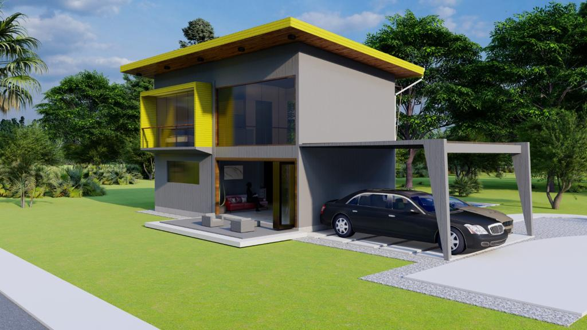

¿Qué necesito para construir?
¡Fácil! Bueno, no fácil, pero sí es un proceso súper gratificante y – contrario al mito – libre de estrés cuando se deja en manos de un profesional.
El proceso de construcción se puede resumir en estos 4 pasos:
Anteproyecto o diseño de proyecto
El diseño de proyecto es la fase más emocionante de todas. Se parte de una reunión inicial en la que le contará a su arquitecta sobre sus necesidades, gustos, presupuestos y expectativas. Después de un proceso de análisis, trabajaré propuestas que se afinarán con base en su retroalimentación. Al final de este proceso, tendrá una idea visual de cómo se verá y sentirá su proyecto.
Planos constructivos
Mientras usted se relaja, su arquitecta se encarga de coordinar con el equipo de diseño el desarrollo de los planos de construcción, o como me gusta llamarlo, el manual de instrucciones que se necesita para construir el proyecto.
Ingeniería civil, Ingeniería eléctrica, Ingeniería mecánica… Todas las disciplinas coordinadas armoniosamente por su encargada de proyecto, la arquitecta.
Trámites de construcción
Una vez listos los planos constructivos, entramos en etapa de tramitología. Sí… Aburridísimo…
Por suerte los trámites de construcción en la mayoría de los cantones están bastante simplificados y, en mi caso, me encargo de ello para que usted no tenga que preocuparse.
Construcción
¡Manos a la obra! ¡Ahora sí!
La construcción es pasar a la realidad todo lo que está en planos. Hay varias formas de llevar a cabo la construcción: desde encargarse usted mismo de administrarla y que su arquitecta supervise, hasta contratar la construcción completa. Luego podemos hablar un poco más de esto y los pros y contras de cada opción.